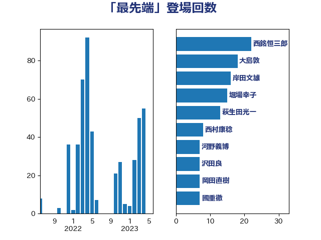

単語「最先端」

| 西銘恒三郎 | 自由民主党 | 22 回 |
| 大島敦 | 立憲民主党 | 18 回 |
| 岸田文雄 | 自由民主党 | 16 回 |
| 堀場幸子 | 日本維新の会 | 15 回 |
| 萩生田光一 | 自由民主党 | 13 回 |
| 西村康稔 | 自由民主党 | 8 回 |
| 河野義博 | 公明党 | 7 回 |
| 沢田良 | 日本維新の会 | 7 回 |
| 岡田直樹 | 自由民主党 | 7 回 |
| 國重徹 | 公明党 | 7 回 |
| 高木かおり | 日本維新の会 | 6 回 |
| 畦元将吾 | 自由民主党 | 6 回 |
| 田村智子 | 日本共産党 | 6 回 |
| 柴田巧 | 日本維新の会 | 6 回 |
| 末松信介 | 自由民主党 | 6 回 |
| 輿水恵一 | 公明党 | 5 回 |
| 藤井比早之 | 自由民主党 | 5 回 |
| 梅村みずほ | 日本維新の会 | 5 回 |
| 松本剛明 | 自由民主党 | 5 回 |
| 小野泰輔 | 日本維新の会 | 5 回 |
| 伊佐進一 | 公明党 | 5 回 |
| 進藤金日子 | 自由民主党 | 4 回 |
| 西村明宏 | 自由民主党 | 4 回 |
| 玄葉光一郎 | 立憲民主党 | 4 回 |
| 永岡桂子 | 自由民主党 | 4 回 |
| 横沢高徳 | 立憲民主党 | 4 回 |
| 山際大志郎 | 自由民主党 | 4 回 |
| 三浦信祐 | 公明党 | 4 回 |
| 三木圭恵 | 日本維新の会 | 4 回 |
| 鈴木敦 | 国民民主党 | 3 回 |
| 金子恭之 | 自由民主党 | 3 回 |
| 藤岡隆雄 | 立憲民主党 | 3 回 |
| 荒井優 | 立憲民主党 | 3 回 |
| 若宮健嗣 | 自由民主党 | 3 回 |
| 福田昭夫 | 立憲民主党 | 3 回 |
| 渡辺博道 | 自由民主党 | 3 回 |
| 東徹 | 日本維新の会 | 3 回 |
| 杉田水脈 | 自由民主党 | 3 回 |
| 新妻秀規 | 公明党 | 3 回 |
| 山崎正恭 | 公明党 | 3 回 |
| 山口壯 | 自由民主党 | 3 回 |
| 小林鷹之 | 自由民主党 | 3 回 |
| 務台俊介 | 自由民主党 | 3 回 |
| 八木哲也 | 自由民主党 | 3 回 |
| 佐藤正久 | 自由民主党 | 3 回 |
| 高見康裕 | 自由民主党 | 2 回 |
| 青柳仁士 | 日本維新の会 | 2 回 |
| 青山大人 | 立憲民主党 | 2 回 |
| 阿部司 | 日本維新の会 | 2 回 |
| 関芳弘 | 自由民主党 | 2 回 |
| 鈴木俊一 | 自由民主党 | 2 回 |
| 金子恵美 | 立憲民主党 | 2 回 |
| 野上浩太郎 | 自由民主党 | 2 回 |
| 空本誠喜 | 日本維新の会 | 2 回 |
| 福島みずほ | 社会民主党 | 2 回 |
| 神谷裕 | 立憲民主党 | 2 回 |
| 神田潤一 | 自由民主党 | 2 回 |
| 田中英之 | 自由民主党 | 2 回 |
| 浅田均 | 日本維新の会 | 2 回 |
| 泉田裕彦 | 自由民主党 | 2 回 |
| 枝野幸男 | 立憲民主党 | 2 回 |
| 星北斗 | 自由民主党 | 2 回 |
| 早坂敦 | 日本維新の会 | 2 回 |
| 岡本あき子 | 立憲民主党 | 2 回 |
| 小沼巧 | 立憲民主党 | 2 回 |
| 寺田稔 | 自由民主党 | 2 回 |
| 大家敏志 | 自由民主党 | 2 回 |
| 大塚耕平 | 国民民主党 | 2 回 |
| 堀井巌 | 自由民主党 | 2 回 |
| 土田慎 | 自由民主党 | 2 回 |
| 住吉寛紀 | 日本維新の会 | 2 回 |
| 中野洋昌 | 公明党 | 2 回 |
| 上杉謙太郎 | 自由民主党 | 2 回 |
| 一谷勇一郎 | 日本維新の会 | 2 回 |
| 鰐淵洋子 | 公明党 | 1 回 |
| 鬼木誠 | 立憲民主党 | 1 回 |
| 高橋はるみ | 自由民主党 | 1 回 |
| 阿部知子 | 立憲民主党 | 1 回 |
| 門山宏哲 | 自由民主党 | 1 回 |
| 長坂康正 | 自由民主党 | 1 回 |
| 鈴木義弘 | 国民民主党 | 1 回 |
| 里見隆治 | 公明党 | 1 回 |
| 赤羽一嘉 | 公明党 | 1 回 |
| 赤澤亮正 | 自由民主党 | 1 回 |
| 赤木正幸 | 日本維新の会 | 1 回 |
| 谷川とむ | 自由民主党 | 1 回 |
| 谷合正明 | 公明党 | 1 回 |
| 谷公一 | 自由民主党 | 1 回 |
| 西野太亮 | 自由民主党 | 1 回 |
| 藤巻健太 | 日本維新の会 | 1 回 |
| 菊田真紀子 | 立憲民主党 | 1 回 |
| 茂木敏充 | 自由民主党 | 1 回 |
| 若松謙維 | 公明党 | 1 回 |
| 船橋利実 | 自由民主党 | 1 回 |
| 篠原孝 | 立憲民主党 | 1 回 |
| 礒崎哲史 | 国民民主党 | 1 回 |
| 矢倉克夫 | 公明党 | 1 回 |
| 田村まみ | 国民民主党 | 1 回 |
| 田嶋要 | 立憲民主党 | 1 回 |
| 猪瀬直樹 | 日本維新の会 | 1 回 |
| 猪口邦子 | 自由民主党 | 1 回 |
| 牧原秀樹 | 自由民主党 | 1 回 |
| 片山さつき | 自由民主党 | 1 回 |
| 熊谷裕人 | 立憲民主党 | 1 回 |
| 渡辺周 | 立憲民主党 | 1 回 |
| 浜田靖一 | 自由民主党 | 1 回 |
| 浅野哲 | 国民民主党 | 1 回 |
| 河野太郎 | 自由民主党 | 1 回 |
| 池畑浩太朗 | 日本維新の会 | 1 回 |
| 江島潔 | 自由民主党 | 1 回 |
| 横山信一 | 公明党 | 1 回 |
| 森田俊和 | 立憲民主党 | 1 回 |
| 森屋宏 | 自由民主党 | 1 回 |
| 梶山弘志 | 自由民主党 | 1 回 |
| 柳ヶ瀬裕文 | 日本維新の会 | 1 回 |
| 林芳正 | 自由民主党 | 1 回 |
| 松野博一 | 自由民主党 | 1 回 |
| 松木けんこう | 立憲民主党 | 1 回 |
| 松山政司 | 自由民主党 | 1 回 |
| 松下新平 | 自由民主党 | 1 回 |
| 杉尾秀哉 | 立憲民主党 | 1 回 |
| 本庄知史 | 立憲民主党 | 1 回 |
| 末松義規 | 立憲民主党 | 1 回 |
| 木村次郎 | 自由民主党 | 1 回 |
| 有村治子 | 自由民主党 | 1 回 |
| 日下正喜 | 公明党 | 1 回 |
| 庄子賢一 | 公明党 | 1 回 |
| 平林晃 | 公明党 | 1 回 |
| 平木大作 | 公明党 | 1 回 |
| 工藤彰三 | 自由民主党 | 1 回 |
| 川田龍平 | 立憲民主党 | 1 回 |
| 岩渕友 | 日本共産党 | 1 回 |
| 山谷えり子 | 自由民主党 | 1 回 |
| 山本太郎 | れいわ新選組 | 1 回 |
| 山岡達丸 | 立憲民主党 | 1 回 |
| 尾身朝子 | 自由民主党 | 1 回 |
| 宮本徹 | 日本共産党 | 1 回 |
| 大塚拓 | 自由民主党 | 1 回 |
| 堂込麻紀子 | 無所属 | 1 回 |
| 吉良よし子 | 日本共産党 | 1 回 |
| 吉田統彦 | 立憲民主党 | 1 回 |
| 吉田宣弘 | 公明党 | 1 回 |
| 古川直季 | 自由民主党 | 1 回 |
| 加田裕之 | 自由民主党 | 1 回 |
| 倉林明子 | 日本共産党 | 1 回 |
| 伊藤俊輔 | 立憲民主党 | 1 回 |
| 伊東信久 | 日本維新の会 | 1 回 |
| 井坂信彦 | 立憲民主党 | 1 回 |
| 中西祐介 | 自由民主党 | 1 回 |
| 中田宏 | 自由民主党 | 1 回 |
| 中司宏 | 日本維新の会 | 1 回 |
| 世耕弘成 | 自由民主党 | 1 回 |
| ながえ孝子 | 無所属 | 1 回 |
| こやり隆史 | 自由民主党 | 1 回 |